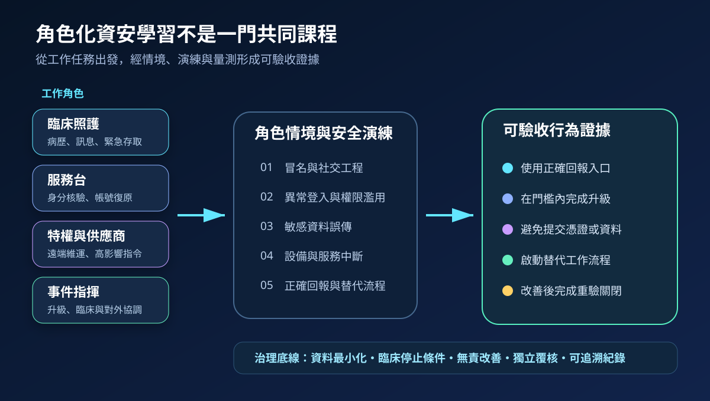
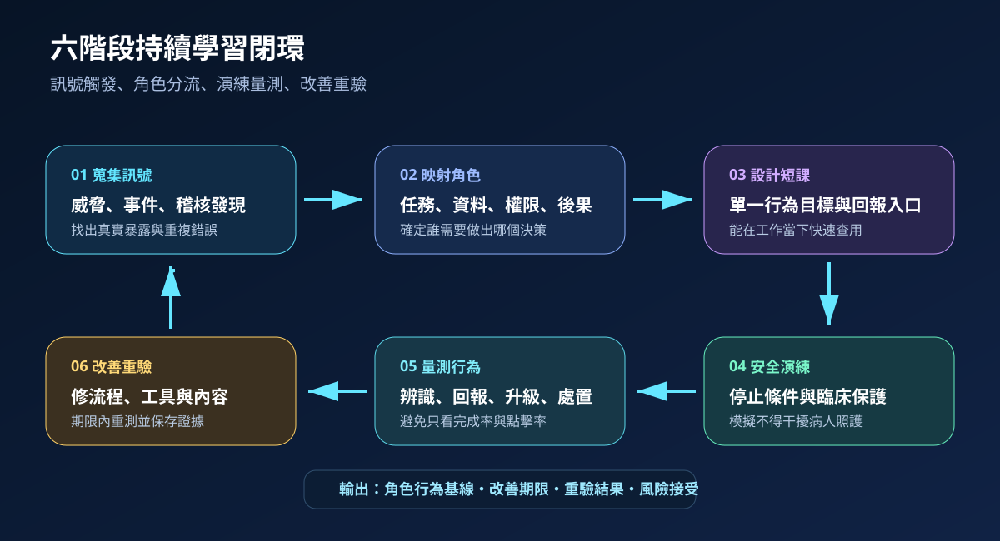
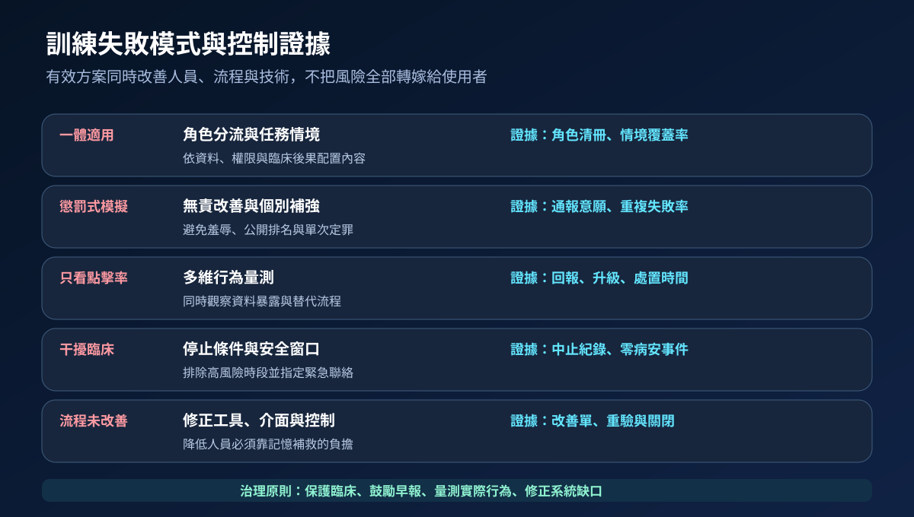

醫療資安國際觀察 · 2026-11-26
臨床資安訓練如何從年度課程變成可驗收行為：角色分流與改善閉環
作者：Dr. William｜醫療資訊與資安治理實務工作者
完成年度課程只能證明內容曾被開啟；醫療機構真正需要驗收的是人員能否辨識與自身角色相關的異常、使用正確管道回報、避免擴大影響，並在臨床不中斷的前提下執行既定處置。
名詞解釋：角色化學習、情境模擬與行為證據
角色化學習依工作任務、可接觸資料與可執行權限分配內容；情境模擬用接近真實工作流程的釣魚、冒名、異常登入或設備告警測試反應；行為證據則是回報時間、正確通道、敏感資料處理、升級路徑與後續改善紀錄。測驗分數可保留，但不能取代工作流中的實際表現。
國際現況與適用邊界
HHS OCR 於 2026 年 10 月的資安月資料指出，資安教育應超越一次性訓練，依工作角色與風險提供更新內容，並以模擬、回報流程及持續改善強化人員防線。HHS 醫療產業資安績效目標把基本訓練列為必要基礎，並將角色特定訓練列入進階目標。NIST SP 800-50 Rev.1 則以生命週期方法要求分析需求、設計課程、執行、評估與持續更新。
法域與適用原則：HHS 資料與績效目標面向美國醫療與公共衛生產業，其中績效目標為自願性資安實務；NIST 文件屬學習計畫指引。這些內容不構成台灣醫療機構的直接法定義務。台灣院所可依本地法規、主管機關要求、院內風險與臨床作業建立自己的角色、頻率及驗收門檻。
對台灣醫療機構的影響
醫院人員同時面對電子病歷、通訊軟體、病人資料、醫療設備、遠端維運與緊急存取，單一通識課程難以涵蓋不同錯誤後果。可先把高風險角色分成臨床照護、服務台、特權維運、供應商及事件指揮，再把近期事件與院內異常訊號轉成短週期情境。重點不是增加課程數量，而是讓人員在實際工作節點知道何時停止、如何回報及由誰接手。
規劃：以角色、風險與驗收條件定義範圍
治理單位應先建立角色與任務清冊，標示資料敏感度、可執行權限、常見攻擊路徑、臨床中斷容忍度及必要處置。每個情境需指定責任人、回報管道、完成頻率、例外處理與改善期限。驗收指標可包含正確回報率、中位回報時間、錯誤憑證提交率、事件升級正確率、重複失敗率、補強完成率，以及演練是否造成不必要的臨床干擾。
實作：六階段建立持續學習閉環
- 蒐集訊號：彙整威脅通報、院內事件、服務台紀錄及稽核發現。
- 映射角色：確認哪些角色會收到訊息、使用工具、核准權限或承擔臨床後果。
- 設計短課：以單一行為目標製作短內容，附正確回報與替代流程。
- 安全演練：設定停止條件、白名單與臨床保護措施後執行情境模擬。
- 量測行為：同時觀察辨識、回報、升級、處置及資料暴露，不只計算點擊。
- 改善重驗：修正流程、工具或內容，在期限內重測並保存關閉證據。

風險：訓練本身也可能製造盲點
全員使用相同內容會掩蓋特權帳號、服務台與供應商風險；只看完成率或點擊率會忽略是否正確回報；帶有羞辱或懲罰色彩的模擬可能降低通報意願；未設定臨床停止條件可能干擾照護；只要求人員警覺而不修正郵件、身分與回報工具，則把系統缺口錯誤轉嫁給使用者。每次演練都應保留資料最小化、無責改善、臨床安全與獨立覆核機制。

可執行清單
- 是否建立高風險角色、任務、資料與權限的對照清冊？
- 是否把院內事件與近期威脅轉成單一行為目標的短情境？
- 每個情境是否提供可在工作當下使用的回報入口與替代流程？
- 模擬前是否設定臨床停止條件、資料最小化與緊急聯絡人？
- 指標是否同時涵蓋辨識、回報、升級、處置與重複失敗？
- 是否避免以羞辱、公開排名或單次失敗作為主要管理手段？
- 流程或工具修正後是否在期限內重驗並留下關閉證據？
來源
- HHS OCR｜Cybersecurity Awareness Month 2026（發布：2026-10；頁面審查：2026-11-03；查閱：2026-11-26）
- HHS｜Healthcare and Public Health Cybersecurity Performance Goals（發布：2023；查閱：2026-11-26）
- NIST｜SP 800-50 Rev.1, Building a Cybersecurity and Privacy Learning Program（發布：2024-09-12；查閱：2026-11-26）
內容說明
本文依健康台灣深耕計畫相關治理內容整理，並參考 HHS 與 NIST 官方資料，說明角色化資安學習、情境模擬與行為驗收的治理方法；不把美國自願性目標或技術指引視為台灣醫療機構的直接法定義務，也不取代主管機關要求、勞動與隱私規範、臨床安全程序或院內教育政策。